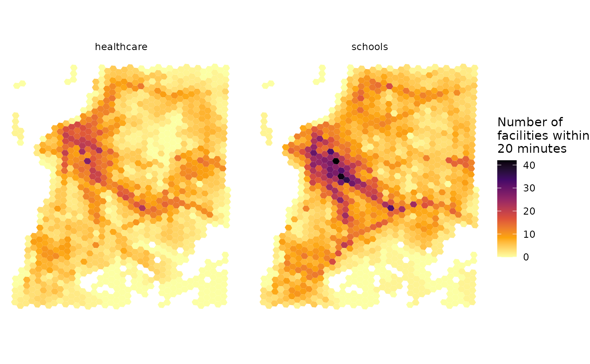
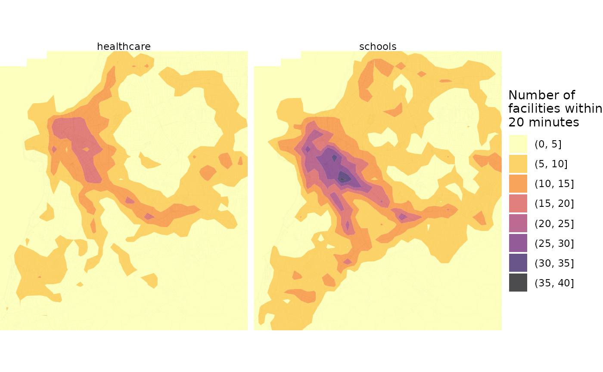

Abstract
This vignette shows how to calculate and visualize accessibility in R using ther5r package.
Accessibility indicators measure the ease with which opportunities,
such as jobs, can be reached by a traveler from a particular location
(Levinson and et al. 2020). This vignette
shows how to calculate and visualize accessibility in R using the r5r
package using a reproducible example. In this example, we will be
using a sample data set for the city of Porto Alegre (Brazil) included
in r5r.
There are two ways to calculate / visualize accessibility using
r5r. The quick and easy option is using the
r5r::accessibility() function. The other alternative
requires one to first calculate a travel time matrix, and then to use
the {accessibility}
package. This is a more flexible options because the
accessibility package provides a wider range of options
of accessibility metrics. We will cover both approaches in this
vignette.
Before we start, we need to increase Java memory + load a few libraries, and to build routable transport network.
setup_r5()
First, we need to increase the memory available to Java and load the packages used in this vignette. Please note we allocate RAM memory to Java before loading our libraries.
options(java.parameters = "-Xmx2G")
library(r5r)
library(accessibility)
library(sf)
library(data.table)
library(ggplot2)
library(interp)
library(h3jsr)
library(dplyr)To build a routable transport network with r5r, the user
needs to call setup_r5() with the path to the directory
where OpenStreetMap and GTFS data are stored.
# system.file returns the directory with example data inside the r5r package
# set data path to directory containing your own data if not running this example
data_path <- system.file("extdata/poa", package = "r5r")
r5r_core <- setup_r5(data_path)There are different types of accessibility metrics. One of the
simplest ones is the cumulative-opportunity metric, which counts the
number of opportunities accessible from each location considering a
maximum travel time cutoff. This is what we’ll be calculating in this
vignette using the parameter decay_function = "step".
In this example, we will be calculating the number of schools and
public healthcare facilities accessible by public transport within a
travel time of up to 20 minutes. The sample data provided contains
information on the spatial distribution of schools in Porto Alegre in
the points$schools column, and healthcare facilities in the
points$healthcare column.
With the code below we compute the number of schools and healthcare
accessible considering median of multiple travel time estimates
departing every minute over a 60-minute time window, between 2pm and
3pm. The accessibility() function can calculate access to
multiple opportunities in a single call, which is much more efficient
and convenient than producing a travel time matrix of the study area and
manually computing accessibility.
# read all points in the city
points <- fread(file.path(data_path, "poa_hexgrid.csv"))
# routing inputs
mode <- c("WALK", "TRANSIT")
max_walk_time <- 30 # in minutes
travel_time_cutoff <- 20 # in minutes
time_window <- 60 # in minutes
departure_datetime <- as.POSIXct("13-05-2019 14:00:00",
format = "%d-%m-%Y %H:%M:%S")
# calculate accessibility
access1 <- r5r::accessibility(r5r_core,
origins = points,
destinations = points,
mode = mode,
opportunities_colnames = c("schools", "healthcare"),
decay_function = "step",
cutoffs = travel_time_cutoff,
departure_datetime = departure_datetime,
max_walk_time = max_walk_time,
time_window = time_window,
progress = FALSE)
head(access1)
#> id opportunity percentile cutoff accessibility
#> 1: 89a901291abffff schools 50 20 3
#> 2: 89a901291abffff healthcare 50 20 6
#> 3: 89a9012a3cfffff schools 50 20 0
#> 4: 89a9012a3cfffff healthcare 50 20 0
#> 5: 89a901295b7ffff schools 50 20 6
#> 6: 89a901295b7ffff healthcare 50 20 4Mind you that the r5r::accessibility() also allow users
to calculate gravity-based accessibility metrics, which can be
calculated by setting the decay_function to one of the
following: "exponential" "fixed_exponential",
"linear" or "logistic". Nonetheless, there are
several other types of accessibility metrics not implemented in R5,
including floating catchment area metrics, travel cost to closest N
opportunities, time interval based cumulative opportunity, etc. This is
where the accessibility package comes in.
The accessibility package provides a much more
flexible approach to calculate accessibility estimates. A key input here
is a travel
time matrix, which we calculate using r5r:
# calculate travel time matrix
ttm <- r5r::travel_time_matrix(r5r_core,
origins = points,
destinations = points,
mode = mode,
departure_datetime = departure_datetime,
max_walk_time = max_walk_time,
time_window = time_window,
progress = FALSE)
head(ttm)
#> from_id to_id travel_time_p50
#> 1: 89a901291abffff 89a901291abffff 1
#> 2: 89a901291abffff 89a9012a3cfffff 78
#> 3: 89a901291abffff 89a901295b7ffff 45
#> 4: 89a901291abffff 89a901284a3ffff 60
#> 5: 89a901291abffff 89a9012809bffff 47
#> 6: 89a901291abffff 89a901285cfffff 38Now to calculate a traditional cumulative opportunity metric like we
did above, we just need to call the
accessibility::cumulative_cutoff() function, and pass our
travel time matrix and land use data as input:
# calculate accessibility
access_edu <- accessibility::cumulative_cutoff(travel_matrix = ttm,
land_use_data = points,
opportunity = 'schools',
travel_cost = 'travel_time_p50',
cutoff = 20)
access_health <- accessibility::cumulative_cutoff(travel_matrix = ttm,
land_use_data = points,
opportunity = 'healthcare',
travel_cost = 'travel_time_p50',
cutoff = 20)
#> Warning: 'land_use_data$healthcare' contains NA values, which may produce NAs
#> in the final output.
head(access_edu)
#> id schools
#> 1: 89a9012124fffff 1
#> 2: 89a9012126bffff 4
#> 3: 89a9012127bffff 2
#> 4: 89a90128003ffff 8
#> 5: 89a90128007ffff 5
#> 6: 89a9012800bffff 8
head(access_health)
#> id healthcare
#> 1: 89a9012124fffff 0
#> 2: 89a9012126bffff 1
#> 3: 89a9012127bffff 1
#> 4: 89a90128003ffff 3
#> 5: 89a90128007ffff 1
#> 6: 89a9012800bffff 3The final step is mapping the accessibility results calculated earlier. We can use at least two different approaches to map our accessibility estimates.
The first approach is to use choropleth maps. In our example, each point of reference is the centroid of a H3 hexagonal grid at a fine spatial resolution. In this case, we basically need to retrieve the polygons of the spatial grid, and merge it with our accessibility estimates.
# retrieve polygons of H3 spatial grid
grid <- h3jsr::cell_to_polygon(points$id, simple = FALSE)
# merge accessibility estimates
access_sf <- left_join(grid, access1, by = c('h3_address'='id'))
# plot
ggplot() +
geom_sf(data = access_sf, aes(fill = accessibility), color= NA) +
scale_fill_viridis_c(direction = -1, option = 'B') +
labs(fill = "Number of\nfacilities within\n20 minutes") +
theme_minimal() +
theme(axis.title = element_blank()) +
facet_wrap(~opportunity) +
theme_void()
An alternative approach is to use our accessibility estimates for each reference point and do some spatial interpolation so we can have a smoother spatial distribution. The code below demonstrates how to do that, producing a prettier map.
# interpolate estimates to get spatially smooth result
access_schools <- access1 %>%
filter(opportunity == "schools") %>%
inner_join(points, by='id') %>%
with(interp::interp(lon, lat, accessibility)) %>%
with(cbind(acc=as.vector(z), # Column-major order
x=rep(x, times=length(y)),
y=rep(y, each=length(x)))) %>% as.data.frame() %>% na.omit() %>%
mutate(opportunity = "schools")
access_health <- access1 %>%
filter(opportunity == "healthcare") %>%
inner_join(points, by='id') %>%
with(interp::interp(lon, lat, accessibility)) %>%
with(cbind(acc=as.vector(z), # Column-major order
x=rep(x, times=length(y)),
y=rep(y, each=length(x)))) %>% as.data.frame() %>% na.omit() %>%
mutate(opportunity = "healthcare")
access.interp <- rbind(access_schools, access_health)
# find results' bounding box to crop the map
bb_x <- c(min(access.interp$x), max(access.interp$x))
bb_y <- c(min(access.interp$y), max(access.interp$y))
# extract OSM network, to plot over map
street_net <- street_network_to_sf(r5r_core)
# plot
ggplot(na.omit(access.interp)) +
geom_sf(data = street_net$edges, color = "gray55", size=0.01, alpha = 0.7) +
geom_contour_filled(aes(x=x, y=y, z=acc), alpha=.7) +
scale_fill_viridis_d(direction = -1, option = 'B') +
scale_x_continuous(expand=c(0,0)) +
scale_y_continuous(expand=c(0,0)) +
coord_sf(xlim = bb_x, ylim = bb_y, datum = NA) +
labs(fill = "Number of\nfacilities within\n20 minutes") +
theme_void() +
facet_wrap(~opportunity)
r5r objects are still allocated to any amount of memory
previously set after they are done with their calculations. In order to
remove an existing r5r object and reallocate the memory it
had been using, we use the stop_r5 function followed by a
call to Java’s garbage collector, as follows:
If you have any suggestions or want to report an error, please visit the package GitHub page.